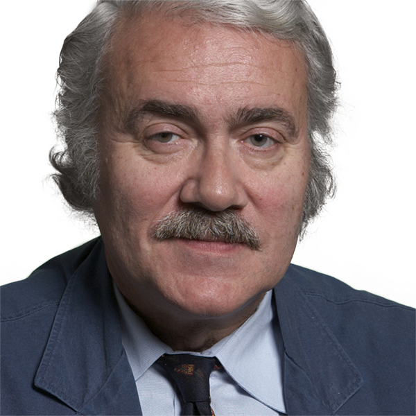

Directory
History
Nicole CasciolaAdjunct InstructorRichard CohenAdjunct InstructorRosanna DentVisiting Research ProfessorHistory of ScienceMedicinetechnologyScience and Technology StudiesGabrielle EsperdyProfessorJohn FlynnAdjunct InstructorMatthew FriedmanAdjunct InstructorFrank FullerAdjunct Instructor Louis HamiltonDean, Albert Dorman Honors Collegemedieval historyRomepapacyurbanismScott KentAdministrative Assistant IIIlektra KostopoulouSenior University LecturerThe Age of Modernity in the Context of Long Term TransformationHumanities and STEM PedagogyHistory and Law (19th-21st Century)Centralization and Decentralization in Modern Regional/Global TermsAlison LefkovitzAssociate Professor
Louis HamiltonDean, Albert Dorman Honors Collegemedieval historyRomepapacyurbanismScott KentAdministrative Assistant IIIlektra KostopoulouSenior University LecturerThe Age of Modernity in the Context of Long Term TransformationHumanities and STEM PedagogyHistory and Law (19th-21st Century)Centralization and Decentralization in Modern Regional/Global TermsAlison LefkovitzAssociate Professor Neil MaherProfessor20th Century US environmental and political historyurban historythe history of environmental justiceenvironmental historyMary MitchellAssistant ProfessorDeborah Morrison-SantanaAdjunct InstructorStephen PembertonAssociate ProfessorHistory of medicineHistory of Sciencehistory of public healthSvanur PeturssonAdjunct Instructor
Neil MaherProfessor20th Century US environmental and political historyurban historythe history of environmental justiceenvironmental historyMary MitchellAssistant ProfessorDeborah Morrison-SantanaAdjunct InstructorStephen PembertonAssociate ProfessorHistory of medicineHistory of Sciencehistory of public healthSvanur PeturssonAdjunct Instructor
Louis HamiltonDean, Albert Dorman Honors Collegemedieval historyRomepapacyurbanismScott KentAdministrative Assistant IIIlektra KostopoulouSenior University LecturerThe Age of Modernity in the Context of Long Term TransformationHumanities and STEM PedagogyHistory and Law (19th-21st Century)Centralization and Decentralization in Modern Regional/Global TermsAlison LefkovitzAssociate ProfessorNeil MaherProfessor20th Century US environmental and political historyurban historythe history of environmental justiceenvironmental historyMary MitchellAssistant ProfessorDeborah Morrison-SantanaAdjunct InstructorStephen PembertonAssociate ProfessorHistory of medicineHistory of Sciencehistory of public healthSvanur PeturssonAdjunct Instructor
Karl SchweizerProfessorHistory of Science18th Century BritainHistoriographyDilplomacyChair
Stephen PembertonAssociate ProfessorHistory of medicineHistory of Sciencehistory of public healthProfessors
Rosanna DentVisiting Research ProfessorHistory of ScienceMedicinetechnologyScience and Technology StudiesGabrielle EsperdyProfessorLouis HamiltonDean, Albert Dorman Honors Collegemedieval historyRomepapacyurbanismScott KentAdministrative Assistant IINeil MaherProfessor20th Century US environmental and political historyurban historythe history of environmental justiceenvironmental historyKarl SchweizerProfessorHistory of Science18th Century BritainHistoriographyDilplomacyAssociate Professors
Alison LefkovitzAssociate ProfessorAssistant Professors
Mary MitchellAssistant ProfessorSenior Lecturers
Nicole CasciolaAdjunct InstructorRichard CohenAdjunct InstructorJohn FlynnAdjunct InstructorMatthew FriedmanAdjunct InstructorFrank FullerAdjunct InstructorIlektra KostopoulouSenior University LecturerThe Age of Modernity in the Context of Long Term TransformationHumanities and STEM PedagogyHistory and Law (19th-21st Century)Centralization and Decentralization in Modern Regional/Global TermsDeborah Morrison-SantanaAdjunct InstructorSvanur PeturssonAdjunct InstructorNo faculty match “”.